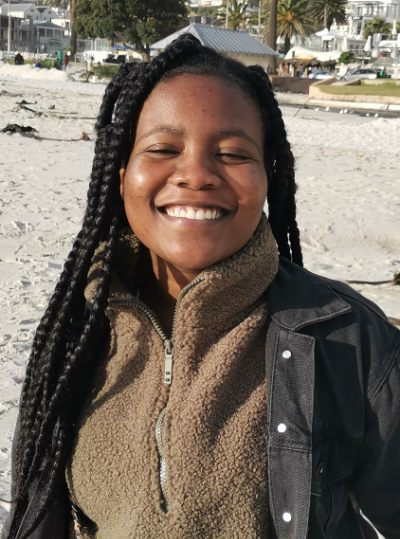

Kimberly Chingara | WWD 130
Hello everyone, my name is Kimberly Chingara.I currently reside in Capetown South Africa. I have lived in Botswana and Zimbabwe throughout chiidhood. I like learning new skills and languages.
Hello everyone, my name is Kimberly Chingara.I currently reside in Capetown South Africa. I have lived in Botswana and Zimbabwe throughout chiidhood. I like learning new skills and languages.